Project Ubin - An analysis of Phases 1 to 5
1. Introduction
Project Ubin was a multi-year collaborative project conducted by the Monetary Authority of Singapore (MAS), in collaboration with the Financial Services Industry to explore the use of Distributed Ledger Technology (DLT) for the clearing and settlement of payments and securities.
Announced in Nov 2016, the project aims to help MAS and the industry better understand the technology and its potential benefits through practical experimentation. This report aims to provide a summary of the 5 phases of Project Ubin and shed light on the insights gained and lessons learnt in each phase and overall.
2. Phase 1 - Exploring the potential of Blockchain
Project Ubin was conceived as an opportunity for Singapore to take a leading role in the research on DLT and Central Bank Digital Currencies (CBDCs). In Phase 1, the project assessed the technical feasibility of using a tokenised form of the Singapore Dollar (SGD) issued by the central bank for inter-bank payments and settlement on a distributed ledger.
2.1 Phase 1 Objectives
The objective in Phase 1 was separated into two parts, technical and research workstreams. The former was to build a proof-of-concept for a domestic payments system or inter-bank obligations on a Distributed Ledger and the latter was to identify non-technical implications of implementing DLT in a production environment.
The project leveraged on MAS’s MEPS+ system to explore the ability to issue funds and enable real-time fund transfers on a Distributed Ledger. This could pave the way for true Delivery vs Payment (DVP) and real-time settlement, reducing existing frictions like late payments, payment failures, intermediaries, and counterparty risk.
2.2 Prototype Design
The Phase 1 prototype adapted several features from the R3 Jasper Project in Canada but followed a “continuous depository receipt model”, which could allow commercial banks to exchange cash collateral for Depository Receipts (DR) on a distributed ledger. The feasibility and benefits of DLT can be seen in Fig 1.1.
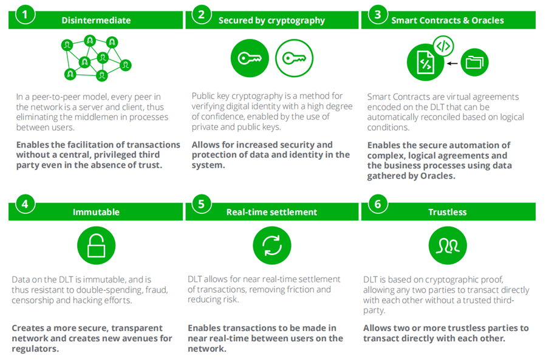
An Ethereum-based Distributed Ledger network was created to integrate with the current MEPS+ and RTGS systems, facilitating the development of a functional integrated transfer prototype (Fig 1.2).
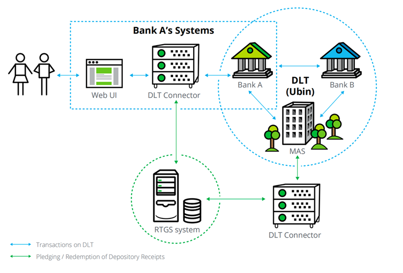
Participant banks would first pledge cash into a custody account held at the central bank (MAS). The funds in participant’s blockchain accounts would then be used as cash collateral in exchange for Depository Receipts issued. Upon verification of the collateral, MAS would then issue an equal value in Depository Receipts, which would then flow to participant wallets through smart contracts. Upon receiving their Depository Receipts from MAS, banks were then free to make transfers to each other (Fig 1.3).
During the prototype development stage, the research workstream had also identified relevant Monetary and Financial regulations and evaluated the prototype’s ability to satisfy these regulations within the broader financial system.
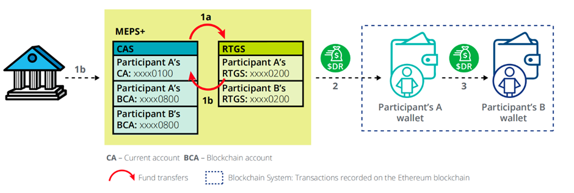
2.3 Findings and Future focus
In Phase 1, an interbank transfer prototype on a private Ethereum network was successfully created, enabling the reduction of credit risks between participants when making payments and increasing the transparency of transactions. This improved transparency could eventually facilitate improvements in liquidity management, enabling participants to replace and optimize pledged collateral more efficiently.
However, the conclusion of Phase 1 revealed many potential challenges as well. For example, Credit and Liquidity risks inherent in the Ethereum network would first need to be evaluated for possible spill over into the existing financial system.
It was also noted that a new legal framework would likely be required to ensure that transfers of the Digital SGD could be treated the same as existing versions of central bank money. Additionally, advanced liquidity management techniques to manage the new Digital SGD would need to be evaluated in order to avoid risks spilling to the existing financial system.
3. Phase 2 - Exploring the use of DLT for RTGS
Phase 2 was a collaborative design and prototyping project, exploring the use of DLT for Real Time Gross Settlement (RTGS) systems.
Led by MAS and the Association of Banks in Singapore (ABS), a consortium of 11 banks and 5 technology partners developed software prototypes on three different DLT platforms (Corda, Hyberledger Fabric and Quorum) for decentralised inter-bank payments and settlements.
The project explored the use of Distributed Ledger Technology for specific functionalities, focusing on the feasibility of decentralising Liquidity Savings Mechanisms(LSM) while maintaining the privacy of banking transactions.
3.1 Phase 2 Objectives
The objective of Phase 2 was to develop three prototypes with specific RTGS functionalities. Each prototype was developed using different DLT platforms, Corda, Hyperledger Fabric and Quorum, running on a common cloud platform, Microsoft Azure.
The prototypes were developed to address 6 key criteria: Decentralised processing, Digitalisation of payments, Payment queue handling, Privacy of transactions, Settlement Finality and Liquidity Optimisation (Fig 2.4).
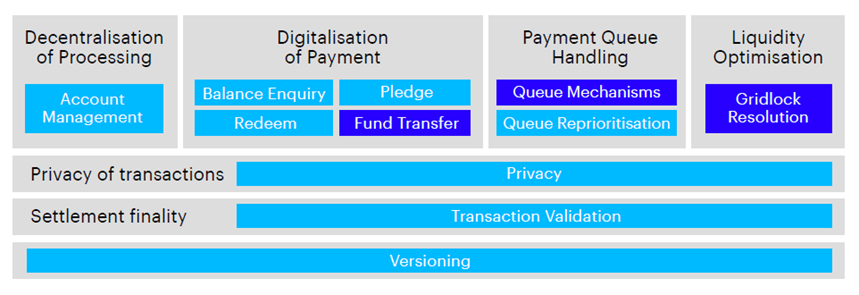
Phase 2 revolves around the optimized netting of payments while preserving transactional privacy. Current Real-Time Gross Settlement (RTGS) systems operate on centralized infrastructure which risk being a single point of failure. It was hoped that DLT could be used as a means to remedy this situation and enable a payments system robust enough to process large volumes of transactions seamlessly while also being able to reduce liquidity gridlocks. The capability to resolve gridlocks is termed as Liquidity Saving Mechanism (LSM). The prospect of a distributed platform also opens doors for a “24/7 Singapore”, which can be beneficial for continuous trade with the global economy.
3.2 Key Findings for Phase 2
Phase 2 was announced as a success when all three prototypes proved to be capable of gridlock resolution. Corda developed a new cycle-based algorithm called “Cycle-solver”, where netting cycles are identified and optimized. On the other hand, both Hyperledger and Quorum used the EAF2 algorithm to detect and identify gridlock resolutions.
In terms of privacy, all 3 prototypes had employed various privacy preserving design features and algorithms. For example, Corda used confidential identities for each transaction, where only authorised parties could identify each other. Hyperledger used channels to restrict interactions between authorised parties while Quorum used Zero-Knowledge proofs (ZKPs) to prevent the outflow of sensitive information.
3.3 Observations on Phase 2
Although MAS had claimed Phase 2 to be a success, we noted that there were a few flaws in prototype development. For example, all prototypes had used Microsoft Azure, a cloud platform, which is hosted on different virtual machines. In the report, it was not clear whether factors such as latency and compatibility issues were considered, since latency issues impacting the same cloud provider could be experienced in all 3 prototypes. Further, there is no way to prove that the transactions were kept private since they are hosted on foreign servers.
According to MAS, it is possible to have a payments network be fully decentralized. However, this would be challenging in reality, since each “node” belonging to a bank, might differ in ability. Smaller banks with smaller transaction volumes might not be able to cope with or bear the cost of maintaining a distributed ledger as compared with banks with higher transaction volumes.
Additionally, all participating banks would need to maintain and operate their own nodes. Hardware and software would need to be maintained frequently to ensure consistent performance across the network. The traditional role of the central bank as the infrastructure operator would also have to be re-evaluated. For example, MAS could in the future, be relegated to lesser roles such as a “Liquidity Manager” or “System Auditor/Mediator”.
Gridlock resolution in a distributed system could also lead to undesirable consequences, especially when participants favour their own corporate interests above others. For example, a single bank could by itself instigate a gridlock resolution to its favour, disadvantaging other participating banks who may find themselves bearing the risk of temporary gaps in liquidity.
4. Phase 3 - Delivery Vs Payment on DLT
Phase 3 centres around a collaboration between MAS and Singapore Exchange (SGX) to develop Delivery Vs Payment (DvP) capabilities for tokenised securities. This project aims to establish inter ledger interoperability and settlement finality for DvP transactions across two separate cash and securities ledgers, starting with tokenised Singapore Government Securities (SGS) and central bank-issued cash-depository receipts (CDRs) or Digital SGD.
This advancement would allow Financial Institutions and corporate investors to exchange and settle tokenised securities against digital currencies, reducing prevailing settlement risks and operational inefficiencies found in the current settlement system. For example, equities trading in SGX is only settled on Trade date + 2, when the Central Depository (CDP) determines whether a trade is successful during its final settlement run. When sellers fail to deliver sufficient securities, CDP initiates a buy-in process to cover the difference and help buyers achieve transaction finality. Potentially, this process can po be further delayed for an additional 6 days should the buy-in process be unsuccessful on Trade date +2.
4.1 Phase 3 Objectives
Phase 3 focused on the design and creation of DvP-on-DLT prototypes that could accomplish the following:
Interledger interoperability between cash and securities ledgers on separate DLT platforms
Mitigation of counterparty risks in DvP
Achievement of DvP settlement finality with clearing members by trade participants
Strengthening of investor confidence and an enhanced user experience
In conventional settlement systems, participating financial institutions must be connected to central operators (clearing houses and central banks) to settle transactions. This represents a single point of failure in a closed loop centralised system. By utilizing DLT to connect cash and securities ledgers, the dependence on central infrastructures could be removed. Furthermore, distributing control and obligations to direct participants could also strengthen network security by reducing centralized vulnerabilities.
Technology partners Anquan Capital, Deloitte, and Nasdaq created three distinct prototypes (fig 3.2), to experiment on the transfer of tokenized SGS and CDRs (Digital SGD) across different DLT systems on a trade-by-trade basis.
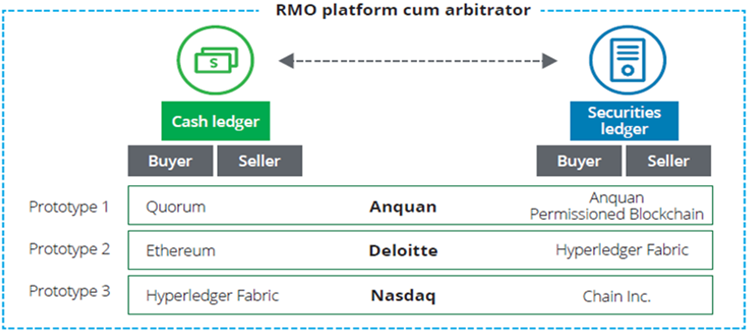
4.2 Prototype Design
Prototype designs in Phase 3 preserve the role of a Recognized Market Operator (RMO) and as a trusted party and arbitrator for contract disputes or settlement failures. For transactions to be successfully concluded, trade participants are imposed with specified time boundaries. Trade agreements comprises of two sets of asset transfers: (i) securities from seller to buyer within 48 hours, and (ii) cash from buyer to seller within 24 hours. Should buyers and sellers both discharge their obligations expeditiously, it is likely that settlement can be achieved within 24 hours or T+1 at the earliest, a marked improvement from the existing T+2 settlement.
Through smart contracts, “Contract Locks” protect against payment and delivery defaults by rendering the committed cash and securities unusable on respective ledgers. Where transactions fail and Smart contract logic is unable to achieve fair settlement, arbitrators can step in to resolve disputes and recover assets. Investor protection is also safeguarded through use of two-of-three multi-signature conditions to verify and effect transactions. For example, in a trade involving three participants (buyer, seller, arbitrator), no single participant can remove or steal assets without the others’ knowledge and approval. An arbitrator may also resolve disputes by intercepting fraudulent transactions using an escrow private key.
Secrets and unique hash passwords are used as means to effect and verify asset transfers between buyers and sellers. This secret is generated by the RMO and sent to participants as encrypted and password-protected PDF files. The PDF file enables trade participants to verify the recipients of transactions using their public key or encrypted address. This secure PDF is sent off-chain and off-band and will not be stored or propagated on the blockchain.
4.3 Challenges and Opportunities for Banks and Brokers
The introduction of DLT settlement systems may pose several challenges for incumbent banks and brokers. For example, banks may need to upgrade their existing systems and processes to connect with the new systems. Similarly, where existing settlement systems and processes have already been broadly integrated into existing bank systems like core banking, the introduction of new DLT settlement systems raises questions on whether they will be interoperable with existing systems or whether additional integration work will be required in future. Shorter settlement cycles from the use of DLT may also increase operational complexity due to the higher volume of trades to be settled in shorter time frames. This may require additional resources like staffing and infrastructure to manage daily settlement processes. Regulators may also revise their requirements, imposing more frequent reporting obligations and compliance checks in line with shorter settlement cycles.
On the other hand, DLT systems could bring about significant efficiencies in trade settlement which could lead to the elimination of manual processes and the optimization of resources, resulting in cost savings. DLT settlement would enable trade participants to directly verify and confirm trades. This increased involvement by participants could reduce settlement failures and its associated risks. A transparent and more efficient settlement process would also likely improve customer experience and satisfaction. Beyond traditional asset classes, alternative assets like real estate and art could also be tokenised in the future and be traded in liquid markets globally. This may present new business opportunities and revenue streams for Banks in the future.
5. Phase 4 - Cross border payments
Phase 4 takes Project Ubin beyond Singapore shores and saw a cross-jurisdictional collaboration between the Bank of Canada (BoC), the Bank of England (BoE), and MAS to focus on enhancing cross-border payments and settlements by exploring alternative models for processing cross-border transactions.
This phase was also supported by financial institutions like HSBC, Overseas-Chinese Banking Corporation (OCBC), the Toronto-Dominion Bank (TD), United Overseas Bank (UOB) and Payments Canada. This project was built on top of previous projects such as Project Jasper by the BoC and Project Ubin’s earlier phases.
5.1 Phase 4 Objectives
Phase 4 was set out to fulfil the following objectives:
Examine the root causes of challenges in cross-border transaction and assess current initiatives that seek to address the pain points
Explore potential, hypothetical future-state capabilities and models, compare relative benefits, and evaluate how these proposals mitigate the challenges identified
Set out a framework to provide reference for the global financial community for possible next steps for both technical and policy work seeking to address pain points
5.2 Phase 4 prototypes
Three key models of cross-border payments were examined during this phase. The models were conceptualised with referenced to addressing the root causes and achieving future-state. (Table 1) which will in turn improve access, speed and transparency of cross-border payments.
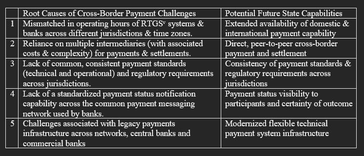
The first two models were built on existing domestic interbank payment systems using traditional technology. The third model, which is our focus, has 3 variations that focuses on the use of Wholesale Central Bank Digital Currency (W-CBDC) and its various applications through DLT.
The following are some of the learnings with regards to each model’s benefits and concerns:
- Model 3a: Currency-Specific W-CBDCs, Transmitted & Exchange Only Within Home Jurisdictions
Key Benefits: Provides 24-7 availability and interoperability between members. This is akin to a tokenized version of the existing correspondent banking model where we could obtain better visibility of payment statuses using ISO2022 standards, without relying on external providers like SWIFT
Key Considerations: Existing challenges associated with the current correspondent banking model could still persist. Banks with liquidity in multiple digital currencies would offer services to those without. This could cause “trapped liquidity”, requiring more effort to monitor positions and manage balance sheets to avoid credit risks since corresponding banks would need to fund their W-CBDC accounts.
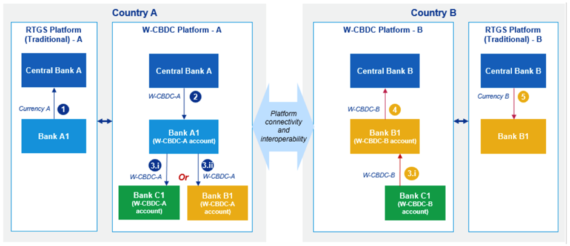
- Model 3b: Currency-Specific W-CBDCs, Transmitted & Exchange Beyond Home Jurisdictions
Key Benefits: On top of the benefits of Model 3a, this extension beyond home offers the possibility of greater efficiency, with reduced reliance on the correspondent banking model via peer-to-peer exchange.
Key Considerations: It requires commercial banks to open and hold multicurrency wallets in each RTGS. This would also impact central banks and their monetary policies since a tokenized version of their reserves being made available in foreign jurisdictions. Banks will also need to manage their Balance sheets intraday and manage their overnight liabilities. This model will require more compliance frameworks and institutional onboarding measures to be set, to broaden access to central bank reserves. There is also exchange rate risk exposure from the use of central bank reserves to collateralise the holding of a foreign digital currency . There is also a possibility of a parallel market for exchange of W-CBDCs within each jurisdiction.
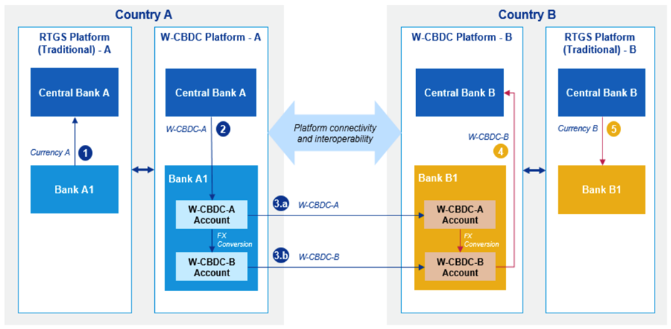
- Model 3c: Universal W-CBDC Backed by A Basket of Currencies and Accepted By All Participating Jurisdictions
Key Benefits: Having a universally accepted digital currency for W-CBDCs could potentially be more easily implemented in more jurisdictions as it is not impacted by many of the policy challenges outlined in Model 3a and Model 3b.
Key Considerations: With a new currency, the U-W-CBDC is subjected to volatility, potential manipulation, and investment activity. This could mean more work for central banks to monitor the supply of funds extended to the U-W-CBDC and new frameworks and policies for collateralisation with respect to volatile intraday exchange rates. This could also represent a single point of failure in this model.
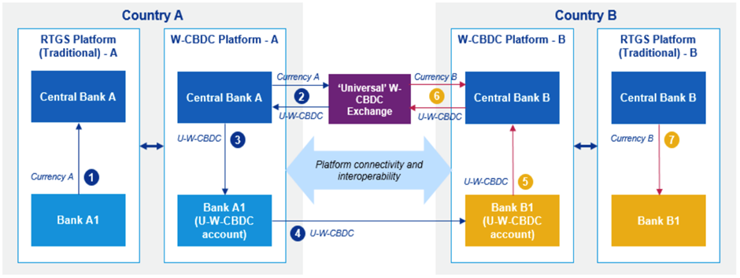
5.3 Beyond Lessons - Proof of Concept
Riding on the learnings from Project Jasper and Project Ubin, the Bank of Canada (BoC) and Monetary Authority of Singapore (MAS) collaborated to test the hypothesis that DLT could enable greater efficiencies and reduce risks in cross-border payments and settlements. They explored the architecture that supported Models 3a, 3b and 3c, to uncover the technical challenges while implementing these models.
A proof of concept (POC) to experiment an all-or-nothing guarantee through an atomic settlement for a Canadian dollar (CAD) – Singapore Dollar (SGD) payment across 2 DLT platforms based on a Hash Time-Locked Contracts (HTLC), a form of smart contracts, to pass messages between 2 systems (Fig 4.1) was experimented with.
The outcome was a successful demonstration of a cross border, cross-currency, cross-platform atomic transaction without the need for a trusted third party (for example, SWIFT). The emphasis of the need for international cooperation and collaboration came out as a strong learning point for trust and openness to flourish in such high stake projects.
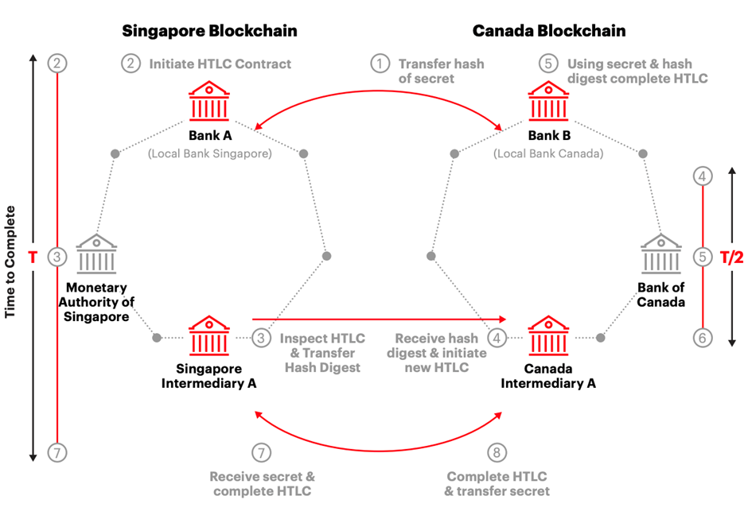
6. Phase 5 - Proving Value of Blockchain Technology
Phase 5 was intended to be the last experimental phase of Project Ubin. With advances in blockchain technology and a good level of understanding of the technology and its applications within the global financial industry, there are only limited technical concepts yet to be proven or explored. Phase 5 therefore focused on proving value and building a foundation for future live pilots and trials by the industry (Monetary Authority of Singapore, 2021).
6.1 Phase 5 objectives
The fifth and final phase of Project Ubin was focused on achieving commercial adoption of blockchain technology, a critical milestone for the widespread implementation and scaling of blockchain-based solutions in the financial industry. In this phase, MAS collaborated with industry partners to explore the use of blockchain technology for a range of financial use cases, including cross-border payments, securities settlement, and digital identities.
6.2 Phase 5 details
MAS collaborated with several financial institutions, including J.P. Morgan, Accenture and Temasek, to develop and test the Ubin V Payment Network. The prototype was built on Quorum, an enterprise-grade blockchain platform developed by J.P. Morgan, and used smart contracts to automate payment and settlement processes. Ubin V Payment Network was able to demonstrate several key features including real-time gross settlement and atomic delivery-versus-payment settlement. It also enabled participants to transact in multiple currencies, with automatic currency conversion and cross-currency payments.
6.3 Phase 5 Prototype design
The Ubin V Payment Network is the fifth and most recent phase of Project Ubin, a series of blockchain technology projects initiated by MAS to explore the potential of blockchain and distributed ledger technology for clearing and settling payments and securities. The Ubin V Payment Network enables participants to transact in multiple currencies, with automatic currency conversion and cross-currency payments. It provides real-time gross settlement and atomic delivery-versus-payment settlement, which reduces the cost and risk of cross-border transactions. The key features of Ubin V are as follows:
Issuance: Commitment of deposits in a designated account in exchange for the equivalent value of digital tokens such as JPM Coin USD and digital SGD on the network.
Transfer: Transaction of digital tokens over the Ubin payments network with other network participants.
Redemption: Conversion of digital tokens back to fiat currency.
Conditional Payments: Smart contracts that hold funds and release payment upon fulfilment of pre-defined conditions. An example would be a Multi-Signature (Multisig) Escrow Service, which is a digital escrow service utilizing the Multi-sig model, to hold funds while a transaction is completed on the delivery network.
Reconciliation: Matching the total outstanding tokenised balance with the actual deposit balance by issuer banks, and tracking transaction records by non-issuer banks.
Motivation and Objectives:
- Technical Development:
Develop a prototype network to a high level of production fidelity, using production-grade infrastructure, and developed it to a bank’s production standard– essentially a production-ready prototype network.
Develop a technical architecture that is flexible, where services and roles are unbundled and modularised.
Develop a payments model that is applicable in a domestic context, and which could be extended as a reference for international multi-country, multicurrency settlement.
- Use-cases Development:
Understand use cases with clear and immediate business needs such as transacting in multiple currencies, and settlement of securities and other assets.
Explore new and emerging use cases, particularly blockchain applications that are live or going live.
- Connectivity and Integration Testing:
Develop additional functionalities and connectivity interfaces to support integration with use cases.
Conduct integration testing with selected use cases to refine functional and connectivity specifications.
Release and publish specifications under open-source license.
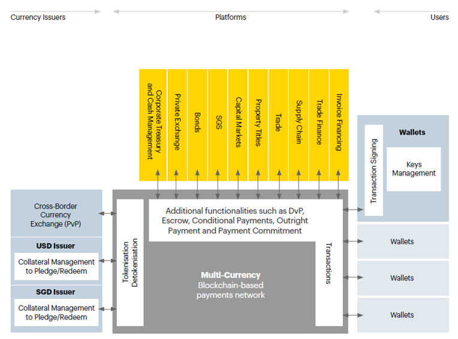
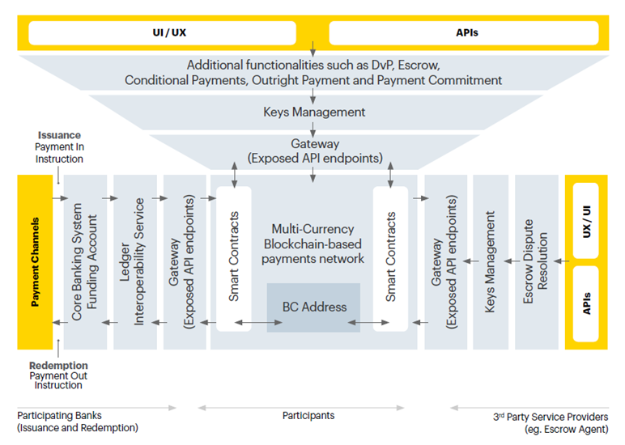
6.4 Phase 5 commercial use cases
Case Study 1 - Private securities exchange
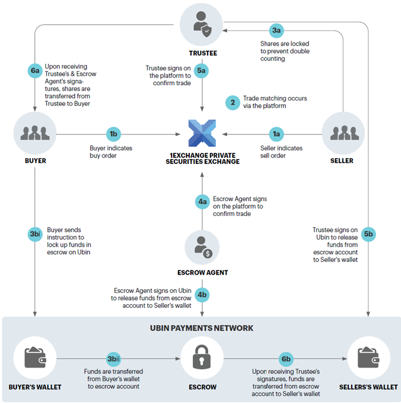
Case study 1 showcases how a private securities exchange can use the functionality offered by the Ubin payments network to enable the atomic DvP of private securities and corresponding payments between buyers and sellers. 1exchange, which was granted its Recognised Market Operator licence by MAS in December 2018, is the country’s first regulated stock exchange for the trading of Singaporean private companies’ securities. Investors who trade in private securities listed on the platform will have digital representations of their shareholdings created and registered via smart contracts on a public blockchain network.
Case Study 2 - Tokenised bonds and payments
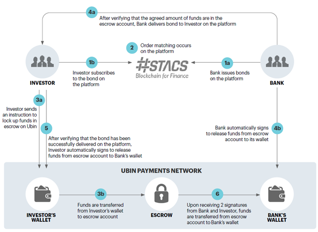
Case Study 2 demonstrates how the functionality offered by the Ubin payments network could be used to enable the atomic DvP of tokenised bonds and payments. STACS has developed a securities trading asset clearing and settlement platform based on blockchain technology, which financial institutions can use for the issuance and lifecycle management of digital securities. Specifically, this case study models the origination of a bond on the platform, whereby an investment bank can issue bonds on behalf of a company on the platform and can accept payment of funds from the Ubin payments network. Investors would refer to other banks looking to purchase bonds on behalf of their clients, using funds in the Ubin payments network.
Case Study 3 - Cross border settlement of digital securities and dividends
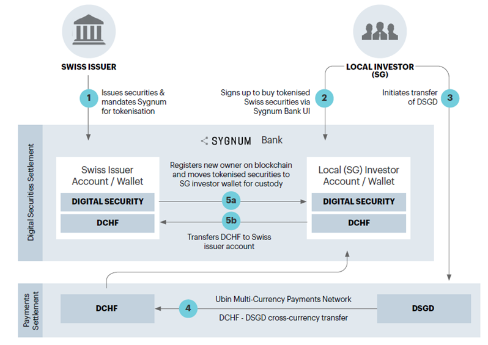
Sygnum Bank AG (Sygnum) has provided two case studies that could be involved in the Ubin payments network. These are cross-border settlement of a digital security transaction in the primary market, and cross-border dividend payment using digital currencies. Integrating with the Ubin payments network will bring quicker settlement of digital securities, as clearing is conducted real-time on-chain.
Moreover, the conditional payment functionality on the Ubin payments network will allow dividend payments to be released based on certain conditions such as time or percentage of shareholding, thereby reducing manual processes while increasing the speed of payment.
Case Study 4 - Trade document exchange and payments processing
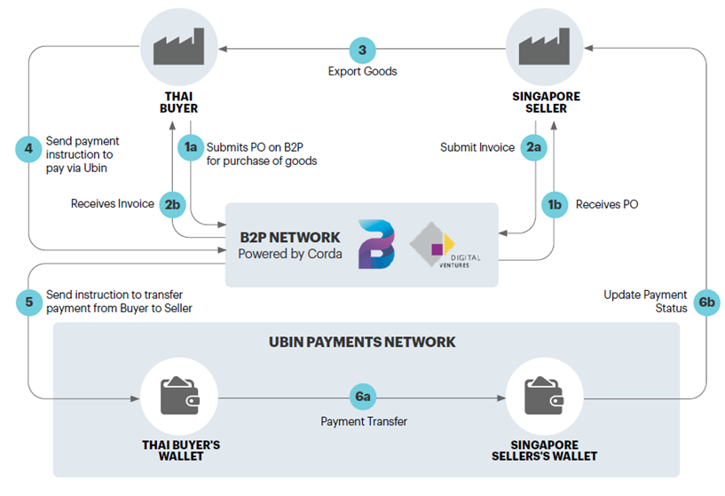
Digital Ventures, a subsidiary of Siam Commercial Bank, has developed a platform called Blockchain for Procure-to-Pay (B2P) to enable trade document exchanges with automated document verification and payment processing. This platform improves process efficiency and delivers cost savings to buyers; it also provides sellers with easier and faster access to supply chain financing.
The B2P platform was integrated with the Ubin payments network to facilitate supply chain trading and financing. Buyers, sellers and banks exchange trade documents over the platform, with payments settled through the Ubin payments network. This integration shows the potential for achieving more efficient means of cross border, single-currency settlement.
Case Study 5 - Supply Chain finance
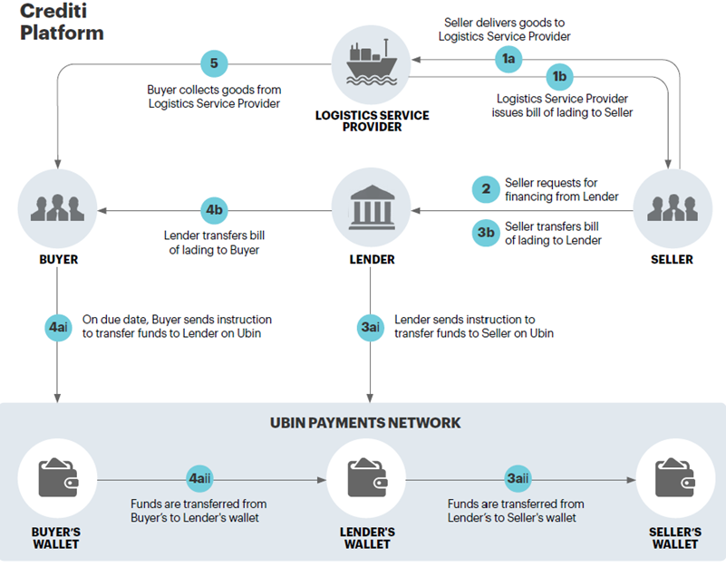
Case study 5 explores how the Ubin conditional payment functionality may be used by Crediti, a Singapore-headquartered blockchain-enabled trade credit and supply chain financing platform that engages non-bank institutional capital as an alternative source of funding to SMEs seeking finance.
Every exposure is tokenised and recorded in an immutable registry, which prevents ownership title documents such as bills of lading and invoices from being financed by multiple lenders on the platform.
In this case study, it is assumed that a seller requests financing on the platform by transferring the bill of lading, which serves as a document of title to a commoditised product, to the lender.
Case Study 6 - Healthcare claims
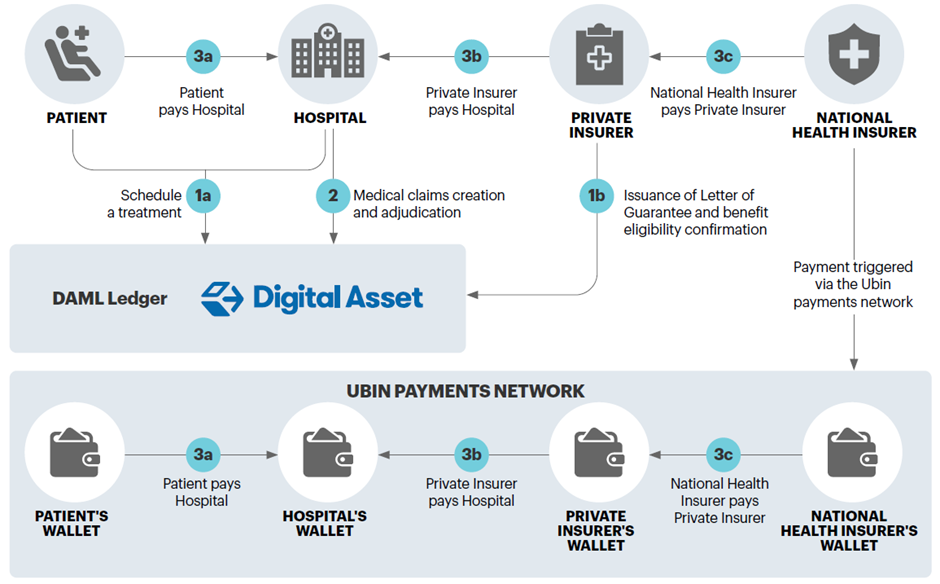
Digital Asset helps enterprises design, create, and run the next generation of distributed ledger applications using Digital Asset Modelling Language (DAML), an intuitive, open-source, smart contract programming language. The firm has developed a prototype for a proposed healthcare claims application, which is modelled on the lifecycle of a hospitalisation claim in Singapore involving a patient, a hospital, a private insurer and a national health insurer.
The interactions between the parties are tracked as ledger events and governed by DAML smart contracts. The application integrates with the Ubin payments network for balance enquiries and the transfer of payments.
Case Study 7 - Payments for programmatic Advertising
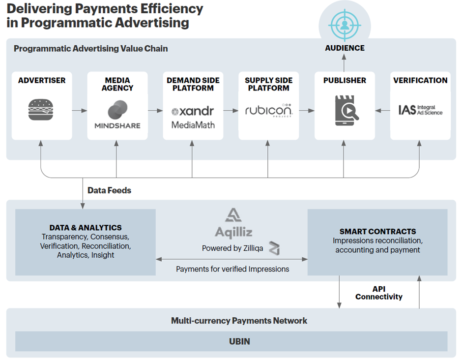
Aqilliz has developed a product, Proton, which leverages on the Zilliqa platform to streamline the digital supply chain of programmatic advertising by connecting multiple parties on a single platform. This network could be integrated with the Ubin payments network to better facilitate the payment process.
The current model looks at the net settlement via the Ubin payments network. However, if the Ubin payments network supports cheap and fast micropayments, the amount payable may be automatically calculated and payment be made directly via the Ubin payments network.
Case Study 8 - Salary payments
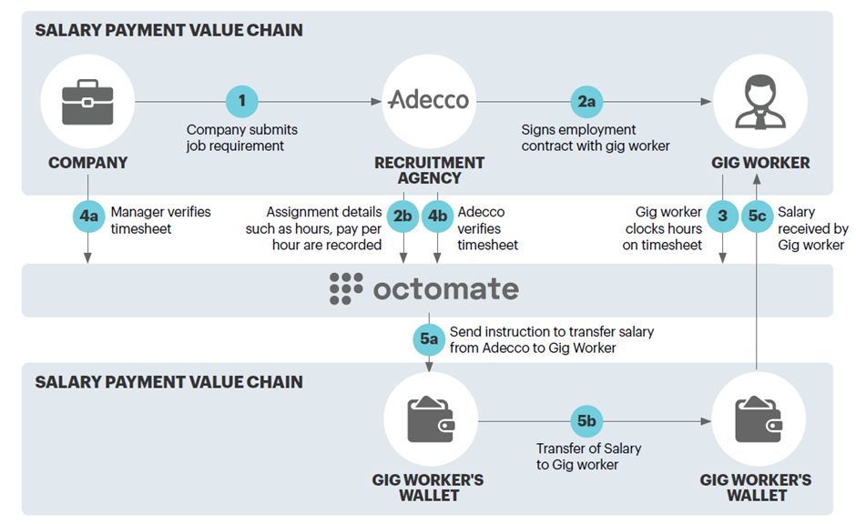
Octomate provides a blockchain-based HR payments solution that allows real-time, accurate salary payments for gig workers and organisations upon work completion. In Adecco’s case, workers and companies can view and track work done on a front-end application. Once the gig workers complete their assignments, the payments are released automatically. To ensure completeness in the process, these platforms can be integrated with bank payment platforms to allow for seamless transactions and the release of payments.
When a worker is legally employed with Adecco to work for its clients, assignment details such as scope of work, hours worked and salary payable are agreed prior to commencement of work.
These pre-defined agreements are recorded on Octomate’s platform, with smart contracts created to govern the conditions for payment. Upon fulfilment of work with pre-defined conditions met, such as verification of a timesheet by a manager, payment is automatically triggered to the gig worker. This further streamlines Adecco’s payment process to achieve speed and efficiency, allowing workers to receive pay faster.
6.5 Key Insights
The success of Phase 5 highlighted the potential for blockchain technology to revolutionize domestic and cross-border payments and settlements. The prototype demonstrated that blockchain can enable faster, cheaper, and more secure transactions, with the ability to transact in multiple currencies. Additionally, the collaboration between MAS and financial institutions showed that the development of blockchain solutions requires a collaborative approach. The partnership between the public and private sectors was crucial to the success of the project.
Lessons Learnt
The development of Phase 5: Ubin V Payment Network has provided several important lessons for the financial industry and for the development of blockchain-based solutions in general. Some of the key lessons learned from the Ubin V Payment Network include:
Collaboration is essential: The success of the Ubin V Payment Network prototype demonstrates the importance of collaboration between financial institutions, regulators, and technology providers. The collaboration between MAS, J.P. Morgan, and Temasek was critical to the development of the network and highlights the importance of bringing together diverse expertise and resources.
Blockchain can improve efficiency and reduce costs: The Ubin V Payment Network prototype has demonstrated the potential for blockchain to improve efficiency and reduce the costs of cross-border payments and settlements. By automating payment and settlement processes and providing real-time gross settlement and atomic delivery-versus-payment settlement, the network reduces the need for intermediaries and reduces the cost and risk of cross-border transactions.
Interoperability is key: The Ubin V Payment Network prototype was designed to facilitate cross-border payments and settlements between different currencies. Interoperability between different blockchain networks and traditional financial systems will be essential to enable seamless cross-border transactions and facilitate the adoption of blockchain-based solutions.
Regulation is important: The development of blockchain-based solutions for the financial industry will require a supportive regulatory environment. MAS has played an important role in providing regulatory clarity and support for the development of the Ubin V Payment Network prototype, and this will be critical for the broader adoption of blockchain-based solutions in the financial industry.
7. Way Ahead
The success of Project Ubin has paved the way for further exploration and development of blockchain-based solutions for cross-border payments and settlements. Future projects could focus on the integration of blockchain technology with other emerging technologies, such as artificial intelligence and the Internet of Things, to enable even greater innovation in this space.
Key Success Factors:
Collaborative approach: The success of Project Ubin can be attributed to the collaborative approach between MAS and financial institutions. The collaboration enabled the development of a robust and efficient payment network prototype that addressed the challenges of cross-border payments and settlements.
Agile methodology: Project Ubin utilized an agile methodology that enabled development teams to iterate quickly and adjust to changing requirements. This approach ensured that the prototype was developed efficiently and effectively.
Focus on use cases: Project Ubin was focused on specific use cases in each phase, such as cross-border payments and settlements. This enabled development teams to develop prototypes that addressed the specific challenges and requirements of these use cases.
Technological expertise: The team involved in Project Ubin had a high level of expertise in blockchain and DLT, which proved critical to the success of the project.
Critical Challenges:
Regulatory challenges: The development of a blockchain-based payment network required the collaboration of different regulatory bodies, which can be a time-consuming and challenging process.
Security concerns: The development of any payment network involves significant security concerns. Ensuring the security of the payment network is critical to its success, and any security breaches could significantly undermine confidence in the network.
Adoption by financial institutions: The success of Project Ubin will depend on the adoption of the payment network by financial institutions. Convincing financial institutions to adopt new technologies can be a challenge, particularly if they already have existing payment networks that are functioning well.
Interoperability: A significant challenge is ensuring interoperability with existing payment networks and systems. Ensuring that the new payment network can communicate and transact with existing networks is critical to its success.
While Project Ubin has been a successful initiative in driving innovation and collaboration in the blockchain and distributed ledger technology (DLT) space, MAS has continued to explore new initiatives namely Project Ubin+.
On Apr 21 2021, DBS, J.P. Morgan, and Temasek announced plans to develop an open industry platform Partior to reimagine and accelerate value movements for payments, trade, and foreign exchange settlement in a new digital era, through a newly-established technology company. Partior builds on the work done under Project Ubin and aims to commercialize the technology developed by MAS and its partners. In particular, Partior leverages the experience gained from Project Ubin’s final phase, which focused on the development of a multi-currency payments network using blockchain technology.
7. Conclusion
Over the five phases of Project Ubin, MAS has collaborated with a range of industry partners, including banks, financial institutions, and technology providers, to explore different use cases for blockchain and DLT. These use cases (see Annex E, uses cases 1-8) have included the development of a prototype for a digital multi-currency payments network, the creation of a bond issuance and servicing platform, and the testing of a blockchain-based platform for the settlement of securities.
One of the key successes of Project Ubin has been its ability to generate interest and momentum in the blockchain and DLT space, both within Singapore and globally. The project has helped to position Singapore as a leading centre for blockchain and DLT innovation and has encouraged other regulators and industry players to explore the potential of these technologies. Another success of Project Ubin has been its ability to foster collaboration between different industry players, including regulators, banks, and technology providers. The collaborative approach taken by MAS has helped to build trust and understanding between different stakeholders and has facilitated the development of innovative solutions that would not have been possible through individual efforts.
In summary, Project Ubin has been considered a largely successful initiative that has helped to drive innovation and collaboration in the blockchain and DLT space. However, it is important to note that Project Ubin is an ongoing initiative, and the full impact of the project may not be realized for several years. While the project has demonstrated the potential for blockchain and DLT to transform the financial industry, there are still challenges to be addressed, including issues around interoperability, scalability, and regulatory clarity.
8. References
Project Ubin: Central Bank Digital Money using Distributed Ledger Technology. (n.d.-b). https://www.mas.gov.sg/schemes-and-initiatives/Project-Ubin
BIS. (2017, September 17). What is distributed ledger technology? BIS Quarterly Review. https://www.bis.org/publ/qtrpdf/r_qt1709y.htm
Central Banks of Canada and Singapore conduct successful experiment for cross-border payments using Distributed Ledger Technology. (n.d.). https://www.mas.gov.sg/news/media-releases/2019/central-banks-of-canada-and-singapore-conduct-successful-experiment-for-cross-border-payments
Bech, M. L. (2020, March 1). On the future of securities settlement. https://www.bis.org/publ/qtrpdf/r_qt2003i.htm
Real-time gross settlement systems. (1997, March 5).
https://www.bis.org/cpmi/publ/d22.htm
Oracle ® FLEXCUBE Universal Banking Foreign Exchange User Guide. (n.d.). https://docs.oracle.com/cd/E74659_01/html/FX/FX07_CLS.htm#:~:text=Continuous%20Linked%20Settlement%20(CLS)%20is,values%20through%20CLS%20Bank%20International.
SWIFT gpi | Swift. (n.d.). Swift. https://www.swift.com/our-solutions/swift-gpi
Extending and aligning payment system operating hours for cross-border payments. (2022, May 12). https://www.bis.org/cpmi/publ/d203.htm
Extending and aligning payment system operating hours for cross-border payments. (2022, May 12). https://www.bis.org/cpmi/publ/d203.htm
The Bank of Canada, Bank of England and Monetary Authority of Singapore share assessment on emerging opportunities for digital transformation in cross-border payments. (n.d.). https://www.mas.gov.sg/news/media-releases/2018/assessment-on-emerging-opportunities-for-digital-transformation-in-cross-border-payments